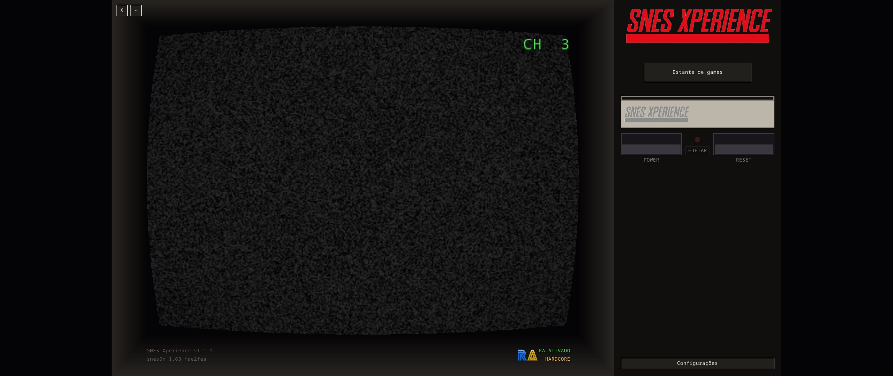
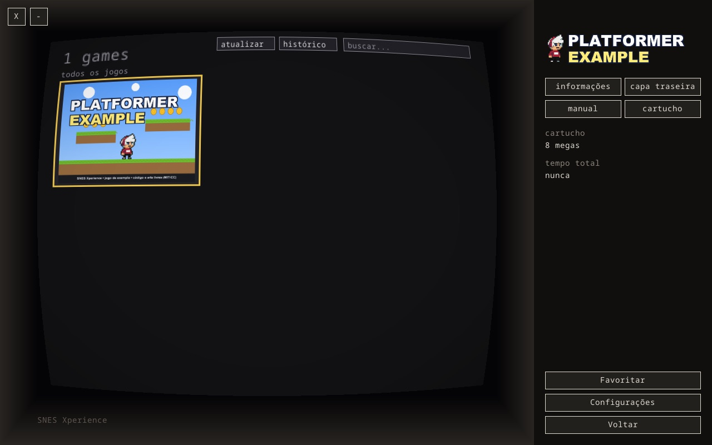

Um console inteiro dentro do seu computador: TV de tubo, painel de chaves
e uma estante de cartuchos. Este manual ensina a montar tudo — do
primeiro clique ao primeiro POWER.
JOGADORES
1 a 2 (controles USB/Bluetooth)
PLATAFORMAS
macOS · Windows · Linux
CLASSIFICAÇÃO
Nostalgia livre · 0 anos
Edição 1.1 · 2026 Projeto pessoal, sem fins comerciais
Antes de ligar, leia a página 2. Sim, a gente sabe que você não ia ler.
SIXTEEN02 / 10
01ANTES DE LIGAR
O que é isto, afinal?
O SixteeN é um emulador com jeitão de console: um programa que faz
seu computador rodar jogos de Super Nintendo — e se disfarça de console de
verdade, com TV de tubo, chiado de estática e cartucho que entra no slot.
Ele foi desenhado para ser operado com mouse e controle, como um aparelho de
verdade. O teclado só é convocado para duas coisas: jogar (se você não tiver
controle) e digitar anotações e buscas.
VEM NA CAIXA
✔ Um console completo na tela — nada para instalar além do app.
✔ A estante, os saves, o livro de anotações e as conquistas.
✔ Um botão secreto. (Todo console que se preza tem um.)
NÃO VEM NA CAIXA
✘ Os jogos. O app não acompanha nenhuma ROM — cada um usa os
cartuchos que já tem direito de usar.
✘ O “cérebro” que roda os jogos (o núcleo snes9x). Fica tranquilo:
o app baixa sozinho na primeira ligação. Página 4 ensina.
Você vai precisar de
Detalhes
Um computador
macOS, Windows ou Linux. Quanto mais novo, melhor o run-ahead (pág. 9).
Mouse ou controle
Controle USB ou Bluetooth de estilo moderno (Xbox/PS/Switch genérico). Até 2 jogadores.
Suas ROMs
Arquivos .sfc, .smc ou .zip dos jogos que você quer jogar.
Internet (só no começo)
Para o app baixar o núcleo e o catálogo de nomes. Depois disso, joga offline.
PALAVRA DE TÉCNICO
“ROM” é o nome chique do cartucho de arquivo: é o arquivo do jogo que vai
dentro da pasta roms/, igual ao cartucho que entrava no slot. No manual
usamos os dois nomes — cartucho e ROM — pelo mesmo motivo que o console
usa: nostalgia.
SixteeN · Manual do jogadorAntes de ligar
SIXTEEN03 / 10
02INSTALAÇÃO
Três sistemas, três jeitos fáceis
O app mora na aba Releases do projeto no GitHub
(github.com/ticianocorral/sixteen).
Baixe o arquivo do seu sistema e siga o quadro abaixo. Não precisa instalar
mais nada — o pacote já traz tudo consigo.
MACOS
Baixe o arquivo .dmg da aba Releases
Abra o DMG com dois cliques
Arraste o SixteeN para a pasta Aplicativos
Pronto. Abra pelos Aplicativos
WINDOWS
Baixe o .zip da aba Releases
Botão direito no arquivo e escolha Extrair tudo
Entre na pasta e dê dois cliques em sixteen.exe
Dica: crie um atalho na área de trabalho
LINUX
Baixe o .AppImage da aba Releases
Marque-o como executável (botão direito > Propriedades, ou chmod +x)
Dê dois cliques. Funciona sozinho
ONDE FICA O “CONSOLE”?
Na primeira execução, o app cria uma pasta só dele — o lar do console,
onde vivem jogos, saves e configurações:
Sistema
Pasta criada
macOS
Documentos/SixteeN
Windows
a mesma pasta do sixteen.exe
Linux
~/.local/share/SixteeN
DICA DE OURO
Guarde o endereço dessa pasta de cor (ou nos favoritos do gerenciador de
arquivos). É para lá que vão os jogos — e é dela que sai um backup completo:
copiou a pasta, levou o console inteiro.
SixteeN · Manual do jogadorInstalação
SIXTEEN04 / 10
03PRIMEIRA LIGAÇÃO
Dois downloads e você está no ar
Abra o appEle cria as pastas sozinho e liga a TV: estática no ar, selo CH 3 no canto. Como em todo console novo, ainda não há cartucho.
Receba as boas-vindasA TV mostra a tela “bem-vindo ao sixteen”, com os dois downloads do lado. Ninguém precisa adivinhar nada.
Baixe o núcleo snes9xÉ o “cérebro” que roda os jogos. Obrigatório. O app baixa e instala sozinho; o botão vira “instalado” em verde.
Baixe o nointro.dat (opcional)Um catálogo que batiza os jogos com nome, ano e editora oficiais. Recomendado — deixa a estante bonita.
Clique em “continuar”Fim do setup. Da próxima vez o app liga direto, sem cerimônia.

Fig. 1 — A tela de boas-vindas: os dois downloads lado a lado na TV.
SEM INTERNET?
Dá para instalar depois: o download do núcleo também fica em
Configurações > sistema. Ou coloque o arquivo do núcleo à mão na pasta
core/ — o app reconhece na hora.
O QUE É O “NÚCLEO”?
Pense nele como a placa-mãe do console: o pedaço de software que
realmente “roda” o jogo. O SixteeN usa o snes9x, um emulador de SNES
famoso e afinado. Você não precisa entender nada dele — só baixar uma vez.
E O CH 3?
É o canal 3 — o da TV ligada no videogame, nos anos 90. Quando o
console está desligado, a TV mostra estática com esse selo. Detalhe
proposital. Tem mais por vir.
SixteeN · Manual do jogadorPrimeira ligação
SIXTEEN05 / 10
04INSIRA OS CARTUCHOS
Colocando jogos na estante
Abra a pasta do consoleNo macOS: Documentos/SixteeN. No Windows, a pasta do exe. No Linux, ~/.local/share/SixteeN.
Entre em roms/É a “gaveta de cartuchos”. Pode criar subpastas para organizar (por ano, gênero…), o app acha tudo.
Copie suas ROMs para láFormatos: .sfc.smc.fig.swc.bin e .zip (zipado funciona — não precisa descompactar).
Clique em “atualizar” na estanteOs jogos aparecem na hora, em ordem alfabética, prontos para jogar.
NOME É TUDO
As artes e saves de um jogo são amarradas ao nome do arquivo.
Se renomear a ROM depois, use o botão “Renomear ROMs” das Configurações
— ele leva saves, notas e capas junto, nada se perde.

Fig. 2 — A estante: capas, busca, favoritos e recentes.
Deixe bonito (opcional)
Pasta
Capa na estante
assets/cover/
Logo no painel
assets/logo/
Cartucho no slot
assets/cartridge/
Contracapa do jogo
assets/backcover/
Manual em PDF
assets/manual/
Regra do nome: igual ao da ROM, sem a extensão.
Ex.: Super Mario World (USA).sfc > capa
Super Mario World (USA).png
SEM CAPA NENHUMA? SEM PROBLEMA
Sem arte, a estante vira uma lista numerada estilo multicart — e joga
igual. Capa, logo, cartucho e contracapa são enfeite: o console funciona
100% sem eles. Comece jogando; deixe bonito depois.
SixteeN · Manual do jogadorCartuchos
SIXTEEN06 / 10
05CONHEÇA SEU CONSOLE
Anatomia do aparelho
Fig. 3 — O aparelho completo: TV de tubo à esquerda, painel de comando à direita.
Peça
Para que serve
TV de tubo
Onde o jogo aparece — com curvatura e filtro de TV antiga de fábrica.
POWER
Liga e desliga. Desligar não perde o lugar: religar retoma de onde parou.
RESET
Reinicia o jogo do zero. A chave volta sozinha, como no original.
EJETAR
Tira o cartucho e volta à tela inicial. Só funciona desligado — a trava é de propósito!
Slot do cartucho
O jogo escolhido entra aqui, com animação e clique de encaixe.
Peça
Para que serve
Nomeplate
O “adesivo” do queixo: versão do app e do núcleo.
Setas verdes
Acendem quando há atualização do app ou do núcleo. Clique nelas (pág. 9).
Comandos
Lista no painel com Anotações, Conquistas, Cheats, Printscreen, Salvar e Carregar.
Sessão
Cronômetro que conta só o tempo com o console ligado.
SEM BARRA DE TÍTULO
O X fecha e o – minimiza ficam no canto da própria TV.
O app abre em tela cheia; para sair dela, Configurações > vídeo.
SixteeN · Manual do jogadorAnatomia
SIXTEEN07 / 10
06COMO JOGAR
O ritual completo — de pé, como manda a tradição
“Estante de games”Na tela inicial, clique no botão do slot (ou aperte A no controle). A estante desliza para fora da TV.
Escolha o cartuchoClique no jogo: o cartucho desce e assenta no slot. O console continua desligado — estática fraca na TV.
POWER!A chave acende, a neve sobe, o selo CH 3 pisca… e o jogo toma a tela. Este é o bom momento.
JogueMouse não — agora é controle (ou teclado, pág. 8). O cronômetro “sessão” só corre agora.
POWER de novo (pausa esperta)Desligar congela o jogo na memória: religar retoma exatamente do mesmo ponto.
EJETAR (desligado!)O cartucho sobe, a estática volta e você está na tela inicial, pronto para o próximo jogo.
SEU PROGRESSO ESTÁ SEGURO
1. Save do jogo (automático). O app grava a memória do cartucho
a cada ~10 segundos e ao desligar/ejetar/fechar. Use o “Salvar” de dentro
do jogo, como sempre.
2. Save states (a foto do instante). No painel, “Salvar” e
“Carregar” abrem 10 slots por jogo. Congele no meio do pulo, se quiser.
Os arquivos ficam em saves/ — e no backup da pasta vão junto.
ATENÇÃO, JOGADOR ANSIOSO
Ejetar com o console ligado não faz nada — a trava é proposital,
para ninguém perder progresso no calor da partida. Desligue (POWER) e
eijeje em seguida.
FECHOU O APP SEM QUERER?
Tranquilo: o save automático do jogo já foi para o disco. A única
coisa perdida é o “retomar de onde parou” — que vale enquanto o app
está aberto.
SixteeN · Manual do jogadorComo jogar
SIXTEEN08 / 10
07CONTROLES
Controle ou teclado — nos menus, mouse também
O controle no estilo moderno: direcional, L/R, Select/Start e os quatro botões.
Botão do controle
Faz no SNES
Sul (de baixo)
B
Leste (da direita)
A
Oeste / Norte
Y / X
L1·R1 (ombros)
L / R
Start / Select
Start / Select
Sem controle? O teclado joga na porta 1 (e alimenta o código Konami… pág. 9):
Tecla
Botão do SNES
←↑↓→
Direcional
Z
B
X
A
A
Y
S
X
Q / W
L / R
Enter
Start
Shift direito
Select
NOS MENUS
A confirma · B volta · direcionais navegam · L/R passam página.
No teclado, as setas navegam e o mouse faz o resto — exceto digitar
buscas e anotações, aí sim ele entra em cena.
BOTÃO TROUXE
Remapeie tudo em Configurações > controles: clique na linha e
aperte a tecla/botão que quiser. Os botões do console (Power, Eject…)
não mudam — são do hardware.
SixteeN · Manual do jogadorControles
SIXTEEN09 / 10
08RECURSOS DO CONSOLE
Anotações, prints, cheats, conquistas e um segredo
LIVRO DE ANOTAÇÕES
O comando “Anotações” pausa o jogo e abre um livro de duas
páginas: 15 slots de texto (dicas, senhas de fase) e 15 slots de prints
da tela. O que você fixar aparece no painel enquanto joga.
Capturar um print: Printscreen nos comandos, escolha o slot,
dê um nome (opcional) e pronto.
CHEATS
Se o jogo tem códigos conhecidos, o comando “Cheats” abre a
lista pronta: clique para ligar/desligar na hora. Use a busca e os filtros
Todos/Ligados/Desligados. Nada para baixar — o banco já vem no app.
CONQUISTAS (RETROACHIEVEMENTS)
Crie uma conta grátis em retroachievements.org, logue em
Configurações > conquistas e jogue: ao desbloquear, o aviso desliza
no queixo da TV com badge e pontos.
Hardcore (padrão) = valendo: sem cheats nem save states.
Softcore = modo relaxado. Escolha na mesma tela.
Fig. 4 — “CONQUISTA DESBLOQUEADA”: badge, nome e pontos no queixo da TV.
SETAS VERDES = UPDATE
Na tela inicial, setas verdes no nameplate avisam de atualização
do app e do núcleo. Clique, leia as novidades, confirme — o app
baixa, instala e pede para reiniciar. Sem janela no meio do jogo, nunca.
CÓDIGO SECRETO DETECTADO
Na tela inicial, digite com o teclado (ou o direcional do controle):
↑ ↑ ↓ ↓ ← → ← → B A
Um botão “Dev” aparece — com um jogo de exemplo, para testar o
console numa instalação recém-nascida. Vale só até fechar o app.
Conte para todo mundo, estamos orgulhosos.
SixteeN · Manual do jogadorRecursos
SIXTEEN10 / 10
09PROBLEMAS & SOLUÇÕES
Quando a TV resmunga
A TV diz / acontece
O que fazer
“Para jogar é necessário baixar o núcleo snes9x”
Clique no botão de baixar na tela inicial (ou Configurações > sistema).
“nenhuma rom encontrada”
A pasta roms/ está vazia — copie suas ROMs para lá e clique em “atualizar” na estante.
“MODO HARDCORE — savestates/cheats bloqueados”
Você está jogando valendo. Para usar cheats e save states: Configurações > conquistas > desligar modo hardcore.
“Conquistas (versão sem suporte)”
Esse jogo não tem conquistas aceitas no serviço. O resto continua funcionando.
EJETAR não faz nada
O console está ligado. Desligue com POWER — a trava é proposital.
Jogo sem capa na estante
O arquivo de arte precisa ter o mesmo nome da ROM (sem extensão) e estar na pasta certa de assets/.
Atualizou, mas o app não mudou
Feche e abra: o pacote pendente é aplicado na abertura.
Jogo instável / “pesado”
Configurações > jogo > Run-ahead: reduza para 1 ou 0.
RESET DE FÁBRICA (PARCIAL)
Com o app fechado, dá para “zerar” partes sem perder o resto:
apague config/sixteen.cfg para voltar às preferências de fábrica;
apague saves/Nome do Jogo/ para recomeçar aquele jogo do zero.
MUDOU DE COMPUTADOR?
Copie a pasta inteira do console (jogos incluídos) para o mesmo
lugar no outro computador. Saves, notas, artes e preferências viajam juntos.
OBRIGADO POR JOGAR!
SixteeN · projeto pessoal, sem fins comerciais.
Nenhum jogo ou núcleo é distribuído junto — cada jogador usa os seus.